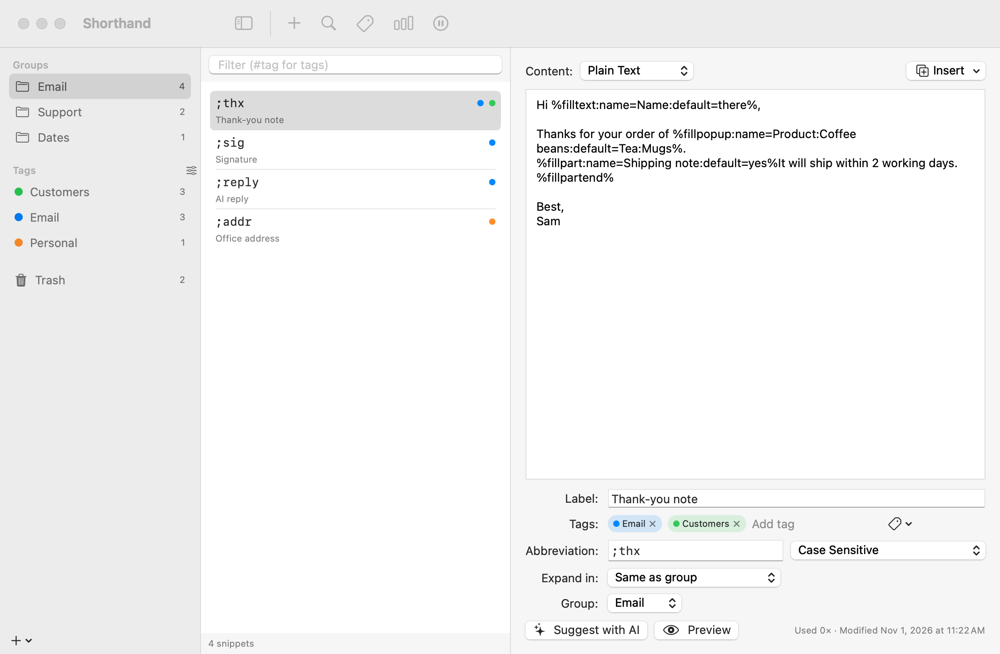

Snippets & Groups
A snippet is a piece of text with an abbreviation. Groups are folders of snippets that share settings.
The main window
Open it with Open Shorthand from the menu bar icon, or Window ▸ Snippet Library (⌘0).

To create a snippet
- Select a group in the sidebar.
- Choose File ▸ New Snippet (⌘N), or click New Snippet in the toolbar.
- Type the content. Use the Insert menu to add dates, fill-ins and other codes.
- Fill in Abbreviation: and, optionally, Label: (a name shown in lists and search).
Everything saves automatically. Click Preview to see what the snippet will type, with today’s date and the current clipboard filled in.
Snippet ideas
| Abbreviation | Content |
|---|---|
;em | john@example.com |
;sig | Best regards,⏎John Appleseed⏎+1 555 0100 |
;tmrw | %@+1D%A, %B %e (tomorrow’s date; see Dates) |
;ty | Thanks %filltext:name=Name%, I really appreciate it. |
;link | <a href="%clipboard">%|</a> |
Content types
Choose the type from the Content: menu above the editor.
- Plain Text
- Takes on the formatting of wherever you type it. Best for most snippets.
- Formatted Text
- Keeps fonts, bold, italic, colours and links. Use the Format menu (Bold ⌘B, Italic ⌘I, Underline ⌘U, Show Fonts, Show Colors). Formatted snippets show a small formatting icon in the list; scripts show a terminal icon.
- AppleScript, Shell Script, JavaScript
- The snippet is a script; its output is typed. See Script Snippets.
New snippets use the Default snippet format from Settings ▸ Expansion.
Managing snippets
- Find a snippet: type in the Filter field above the list. It matches abbreviations, labels, content and tags. Start with
#to match tags only, for example#clients. - Move it: drag it onto another group in the sidebar, use the Group: menu, or right-click and choose Move to Group.
- Copy it: right-click and choose Duplicate. The copy’s abbreviation gets a number added (“1”, or the next free number).
- Delete it: right-click and choose Move to Trash, or press ⌫. It goes to the Trash, where you can put it back later. Click Undo in the notice that appears, or press ⌘Z, to undo it straight away.
- Tag it: type in the Tags: row of the editor. See Tags.
- Changed your mind? Moves, copies, deletes and tag changes can be undone with Edit ▸ Undo (⌘Z) while the snippet list or sidebar is active. See Undoing changes.
- Edit the last one you used: choose Edit Last Expanded Snippet… from the menu bar icon.
The bottom of the editor shows how many times the snippet has been used and when it was last changed.
To move, tag, copy or delete many snippets at once, ⌘-click or ⇧-click them first. See Tags, Trash & Multi-Select.
Conflicts
An abbreviation shown in orange is the beginning of another abbreviation, for example ;addr and ;addr2. The editor lists them under Conflicts with:. Depending on your expansion mode, the shorter one may fire before you can finish typing the longer one. Rename one of them to fix it.
Groups
- To add one, choose File ▸ New Group (⇧⌘N), or click + below the sidebar and choose New Group.
- Select the group (with no snippet selected) to see its settings.
- Drag groups to reorder them.
Group settings:
| Setting | What it does |
|---|---|
| Name | Shown in the sidebar and in the menu bar menu. |
| Enabled | Turn off to stop all of the group’s snippets expanding without deleting them. |
| Expand in | Which apps the group works in. See Per-App Snippets. |
| Expand after | What may come right before an abbreviation. See Expand after. |
| Sound | A sound for this group’s expansions, None, or Default (Preferences). |
| Include in search | Show the group’s snippets in Search. |
Right-click a group for Duplicate Group, Export Group…, Disable Group / Enable Group and Move Group to Trash. Select several groups to see their snippets together or merge them into one; see Selecting several groups.